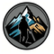

资深藏地导游 · 深度旅行
从咨询到出发，每一步都简单安心
出行时间、人数、偏好、预算，旅行顾问为您初步规划
量身定制行程，住宿·车辆·导游·门票一站式服务
全程24h支持，让您无忧畅游世界第三极
台湾10月专线·后藏环线·巴松措新品·点击查看详情
点击卡片查看详细行程安排
产品打造全新推出·点击查看详情
点击任意图片全屏查看
"穿越喜马拉雅是我一生最难忘的经历，导游专业讲解让这次旅行远超预期。"
— James · 英国
"冈仁波齐转山不仅是一次身体挑战，更是一次心灵洗礼。感谢全程保障。"
— 陈女士 · 上海
"走完阿里大环线，从珠峰到古格王朝，每一处都震撼人心！领队专业负责，全程无忧，明年再来转山！"
— 李先生 · 成都
资深藏地向导，足迹遍及西藏全境。专注：高原徒步·秘境自驾·极地探险·定制旅行·冰川摄影·研学康养·轻奢户外·深度人文。中英双语导游，外宾入藏资质。地址：拉萨市民族北路1号国旅广场5楼｜电话：13989913080
24小时内与您联系
📍 拉萨市民族北路1号国旅广场5楼
📱 13989913080 · 17708985178（微信同号）